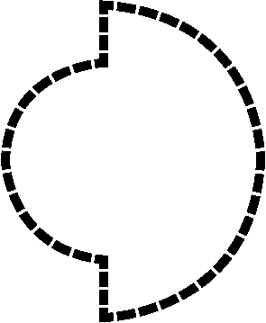
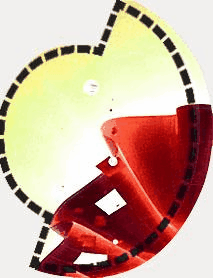

This diagram illustrates one way of visualizing the relationship between Systems and Disciplines across Mono, Multi, Inter & Transdisciplinary Collaboration.
1/
Systems that can be studied using Mono-disciplinary collaboration
2/

A system that can be studied using Multi-disciplinary collaboration.
3/
A system that can be studied using Inter-disciplinary collaboration.
4/

A system that can be studied using Trans-disciplinary collaboration.
The following diagrams are one way of visualizing the relationships between Outcome and Discipline across MMIT Collaborations.
1/

Outcome of Mono-collaboration
2/
Outcome of Multi-collaboration
3/
Outcome of Inter-collaboration
4/
Outcome of Trans-collaboration